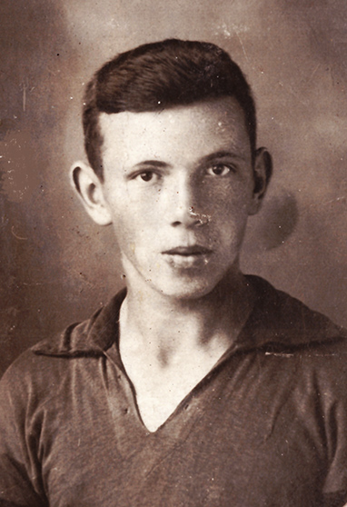
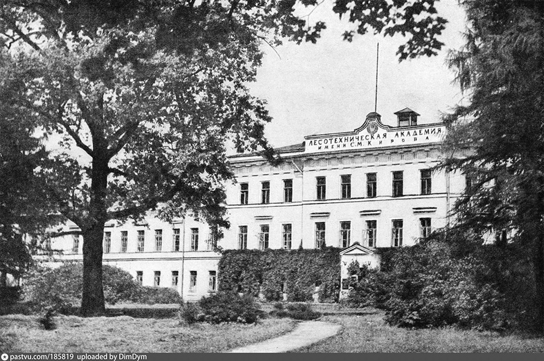

В мои школьные года у нас дома часто заходил разговор о том, кем я хочу стать в будущем. Папа с мамой и сестра хотели, чтобы я пошел в институт - на мой выбор. И в 1931 году, окончив 7 классов, я не ушёл по примеру иных одноклассников на работу или в техникум, а продолжил учёбу. В 1933 году окончил 9 классов – это было окончанием школы 2 ступени, так как до 1936 года 10 класса в советских школах не было. В те годы был лозунг «Техника решает всё». Повысился престиж технических вузов, а педагогических и медицинских, к примеру, резко снизился – случился недобор и объявили туда «Сталинский набор». И нас начали готовить к поступлению в эти (не технические) институты по программе приёмных экзаменов. Занятия закончились примерно в феврале следующего, 1934 года. По совету заведующей Цветковской средней школы Смирнитской Александры Александровны я с её сыном (и моим другом) Михаилом поехали поступать в Ярославский педагогический институт. Михаил на исторический, а я – на биологический факультет.
Ярославский государственный педагогический институт, 1930-е

А.Осин, 1934г.
Документы наши вместе с характеристиками были туда отправлены и нам сказали ждать вызова и готовиться к экзаменам, чтобы не подвести школу. Вызов пришёл на 4 мая, и мы на первых в навигацию пароходах поехали до Кинешмы, а оттуда до Ярославля. В дороге ругали себя, что не поехали поступать, как другие наши товарищи, в Горький или Иваново. Но к нам в Пучеж приезжал вербовщик из Ярославского пединститута, расхваливал свой вуз – бывший лицей, и мы этим соблазнились. В течение мая проводилась так называемая установочная сессия, а с 1 июня начинались вступительные экзамены. На все факультеты сдавался русский язык (устно) и литература (сочинение). Также Михаил сдавал историю партии и историю СССР, а я – биологию и химию. Первый экзамен был по литературе. Писали мы оба сочинение по пьесе М.Горького «На дне». Проверили тексты друг у друга, отметили ошибки. Сдали свои листочки, и зашли в уборную. Тут наш институт и закончился. Я «дёрнул за верёвочку» - и из бачка полилось – сначала в туалет, а потом на лестничную площадку. Мы перепугались и побежали прямо на пристань - и на первом же пароходе поехали домой. Не стали дожидаться результатов первого экзамена, даже вещи оставили в общежитии. Но, поскольку мы приехали домой без вещей, то родители поверили, что мы приехали готовиться к устному экзамену по литературе и русскому языку.
Вернулись мы с Мишей в Ярославль через несколько дней, чтобы забрать документы. Но их нам на руки не выдали, пообещав выслать завтра же в Пучеж на адрес школы. Директор школы вызвал нас через неделю и спросил, почему мы не сдали экзамены. Он сказал, что пошлёт наши документы обратно в институт и мы обязаны сдавать вступительные экзамены в августе, вместе с общим потоком с более строгими требованиями. Не знаю, как объяснила директору отказ поступать именно в Ярославль мама Михаила, а я честно сказал, что хочу попробовать свои силы в Ленинградскую лесотехническую академию. Директор посмотрел на меня, покачал головой и сказал: «поезжай, попробуй свои силы». И я решил попробовать. Встал вопрос о деньгах. Дома я рассказал о своих намерениях, но предупредил, что деньги заработаю сам на выгрузке соли. Платили за это хорошо, но после такой работы трудно отмываться. Родители были недовольны моим бегом по институтам, но махнули на это рукой. Только их волновало, как я поеду в Ленинград в таком пиджаке и «брючонках», как они сказали. Я послал документы в Ленинград, и в заявлении «побожился», что с детства влюблён в лес и хочу посвятить свою жизнь выращиванию лесов на Земле. Это, видимо, подействовало на приёмную комиссию – несмотря на мои скромные отметки в удостоверении об окончании школы мне прислали вызов на экзамены на 1 августа.

Академия леса, г.Ленинград
Поволжский лесотехнический институт, 1930-е
Я приехал в Ленинград, устроился в общежитии на период сдачи экзаменов и пошёл посмотреть институт. Его вид поразил меня – настоящий храм науки! Вид портретов учёных лесоводов, профессоров института на стене укрепил меня в моей цели поступить в этот институт, для чего сдать экзамены как можно успешнее. Остальные поступавшие были одеты намного лучше меня, но я решил, что одежда не главное, хотя и немаловажное, а главное – учиться в Академии Леса, как её называли ленинградцы. Перерывы между экзаменами были по 2-3 дня, поскольку с 15 августа начинались экзамены у второго потока. Все экзамены я сдал на «хорошо», только письменно математику на «удовлетворительно», и я был принят на учёбу в академию. Но радость моя была недолгой. Заместитель директора Академии предупредил, что принят я на учёбу без предоставления общежития, которое в первую очередь предоставлялось детям работников лесного хозяйства. Средств на съем жилья у меня не было, и я пошёл на приём к директору. Он сказал, что помочь может только направлением меня учиться в Краснококшайский лесотехнический институт, что в Марийской республике. Я умолял директора, что хочу учиться только в Ленинграде, сказал, что я люблю лес и купил уже книгу их профессора Сукачёва «Учение о фитоценозе» … Но ничего не помогло. Письмо я взял, но денег у меня оставалось только на дорогу домой. Я пришёл на ж/д станцию и рассказал о своих трудностях. Меня направили к начальнику почтового отделения. Он согласился взять меня с собой до Казани в почтовом вагоне, где я буду грузить и выгружать посылки. За работой я не заметил, как мы прибыли в Казань, очень грязный город. Я поблагодарил почтовика, а он отвёл меня в почтовую контору и попросил помочь мне добраться до Краснококшайска (ныне – г.Йошкар-Ола).
Первое впечатление от марийской столицы было такое, что я попал в художественный коллектив. Почти все носили различные национальные костюмы, говорили по-марийски и я с трудом узнал, где находится мой институт. Директор института, русский по национальности меня выслушал, посмотрел мои документы, зачётку о сдаче экзаменов в Академию и согласился меня принять в русскую группу на лесоводческий факультет с предоставлением общежития. Я попросил все документы обратно и сказал, что завтра приеду окончательно оформляться в институт. Походил по институту, общежитию, погулял в центре города. Всё вокруг было нерусское, это отвергло меня от желания учиться в республике.
Вечером я узнал, как уехать до г.Козьмодемьянск на Волге, а потом – пароходом домой «к русским». Ночью я сел на пароход «Комсомолец» - без билета, так как касса не работала. Я познакомился с боцманом и попросил его спрятать меня от проверок и довезти хотя бы до Горького, а я помогу в разгрузочных работах. Он угостил меня воблой с хлебом, налил стакан чая и уложил спать в каюте, использовавшейся под кладовку. На завтрак он меня отвел в командную столовую и представил меня как «нового матроса до Горького» под смех остальных. И стал я служить матросом, исполнял дневную кормовую вахту, на пристанях помогал в разгрузочных работах. В Горьком я сошёл на берег, поблагодарив боцмана и помощника капитана. Последний посочувствовал мне в моих институтских делах и рекомендовал поступить в Горьковский институт водного транспорта или речное училище, если есть привязанность к Волге. Но такая привязанность появилась у меня позже. В Горьком я занял денег, чтобы доехать до Пучежа у своей тёти Нюры, сестры отца. На следующее утро я вернулся домой, где уже хотели подавать на меня в розыск. Сначала меня отругали, но потом, внимательно выслушав, папа вынес вердикт: «Хватит тебе болтаться по институтам, поезжай в Кострому в текстильный институт. Там тебя примут, дадут общежитие и начнёшь учиться по-человечески». На календаре было 25 августа. Мне дали денег на дорогу, и я со всеми документами уехал в Кострому.
Костромской текстильный институт, 1930-е
Директор КТИ С.И.Полковников
Институт я нашёл быстро, он размещался на улице Дзержинского, где позже разместился обком КПСС и облисполком, а теперь – Администрация Костромской области. Институт выглядел солиднее, чем марийский, и сама Кострома была чистая и большая по сравнению с Пучежем. Увидев зачетку с оценками за экзамены в Академии, меня приняли на учёбу, с условием досдать экзамен по истории партии. В течение 2 дней я подготовился и легко сдал экзамен и был зачислен на факультет прядения. Купил книгу профессора Лбова «Льнопрядение». Получил место в новом общежитии, что на улице Чайковского у спуска к пристани. В общежитии только что завершили покраску полов, и, войдя с вещами в коридор, я услышал голос коменданта: «Куда лезешь? Видишь – всё покрашено!». Я извинился, показал направление и попросил оставить часть вещей. Сказал что приеду заселяться 30 августа. Занял предварительно место в комнате на 1 этаже. Вернувшись домой, порадовал всех своим поступлением, показал студенческий билет. Папа сказал: «Ну слава богу, набегался наш парень по городам и институтам». Пожелали мне "ни пуха, ни пера". И школьные учителя были довольны моим выбором профессии. Сказали, что сын пошёл по стопам отца.
В институт я приехал, как и планировал, 30 августа. В общежитии уже заселились 3 моих соседа по комнате. Один был из Подмосковья, один из Красного-на-Волге и один из д.Домнино, родины Ивана Сусанина. Поговорили о том, что привело каждого в этот институт. Подмосковный студент провалился на экзаменах в Московский текстильный институт, а оба сельских парня не добрали баллов при поступлении на агрономический факультет сельскохозяйственного института. От предложенной замены факультета на зоотехнический они отказались, и их приняли в текстильный на факультет по первичной обработке льна. Мы погуляли по городу. Первое, что нас поразило – это огромные кирпичные глыбы, оставшиеся от взорванного собора Костромского Кремля, что стоял прямо в центре парка имени Ленина. Высокий красивый памятник самому Ленину, установленный в том же парке в 1927г. был хорошо виден издалека. Его сделали на средства, собранные с населения. Постамент того памятника имел свою историю. Он готовился для памятника к 300-летию династии Романовых и в каждом уступе и нише должна была стоять бронзовая фигура кого-либо из монархов. Памятники в ящиках были уже завезены – но смонтировать их не успели и после революции отправили на переплавку на завод «Рабочий Металлист». Сам упомянутый собор был красивейшим из волжских и создавал чудесный облик Костромы с Волги, а звон его колоколов, говорят, был слышен за 40 верст. Чего в городе было много, так это церквей. 1 сентября на набережной напротив института состоялось торжество по посвящению нас в студенты. Произносили какую-то клятву, было весело. Ребят в институте было больше, чем девушек. После торжества разошлись по факультетам, познакомились с учителями. Я запомнил с тех пор преподавателя химии Соболева, а также математика и директора Полковникова. Его сын много позже возглавлял городской совет ветеранов войны и труда.
Развалины Костромского Кремля, начало 1930-х
Памятник В.И.Ленину, г.Кострома, 1930-е
В учёбу я втянулся быстро. Мне в институте всё нравилось, появилась гордость от того, что я студент вуза. Ещё нам перед началом учёбы выдали так называемые «боны» - талоны на 3-разовое бесплатное питание в студенческой столовой и на 2-разовое бесплатное посещение кино в театрах города. Стипендия деньгами не выплачивалась, поэтому другие расходы оплачивались из своего кармана. На помощь из дома надежды не было, и я стал искать подработку. Ежедневно в ту осень нас привлекали на разборку развалин собора, но не платили за это, а уставали мы сильно. Ещё я немного подработал на лодочной станции (под горой от нашего общежития, где теперь причал №3), где я выдавал лодки напрокат, а затем их принимал, делал расчалку и сдавал затем сторожу на хранение. Работали мы вдвоем, через день, что не мешало учёбе – учили, сидя в будочке.
В институте я быстро познакомился с преподавателем физкультуры и зарекомендовал себя как футболист и волейболист, и через небольшое время стал выступать за институтские команды. Мне выдали комплекты спортивной формы (майки, трусы, гетры, бутсы). Команды нашего института обыгрывали тогда все команды первичных коллективов (предприятий), исключая городские команды. В волейбол играли в парке им. Ленина, там у правой стены было до 5 волейбольных площадок и вечером на всех них проводились игры. Тогда было массовое увлечение игровыми видами спорта, чего сейчас (1990-е гг.) нет в школах и только в некоторых техникумах и институтах начало возрождаться. И только я втянулся в бурную и весёлую студенческую жизнь, как после ноябрьских праздников получаю грозную телеграмму из дома: «Срочно выезжай, папу парализовало». Вечером того же дня поговорил по телефону с мамой – она просила меня на время оставить учёбу и пожить дома, может, даже устроиться на работу. В учебной части института меня отпустили неохотно, не оформив никак мой отъезд. И на последнем в навигацию пароходе, уже с ледком на Волге, я добрался до Пучежа.
Снова Пучеж. Фабрика и школа
Папа лежал в постели и, увидев меня, заплакал. Врачи не разрешали ему шевелиться – этот инсульт у него был уже второй. Но сказали, что организм крепкий и папа должен со временем поправиться. Мне они рекомендовали пожить дома, поддержать семью. И я устроился на работу – на нашу льнопрядильную фабрику, смазчиком приготовительного отдела. Через несколько дней и Миша Смирнитский, вопреки желанию своих родителей устроился работать в этот же цех по учёту ленточных тазов. Так началась наша трудовая жизнь. Мишу на фабрике не знали, а меня благодаря отцу знали многие. Секретарь парткома фабрики Яков Васильевич Палинин спрашивал, как здоровье у папы и нравится ли мне моя работа.
Работал я по сменам, и к ночным привык не сразу. Бывало, смажешь банкаброши во время съема пряжи и сунешься поспать в очёс (остатки льна после кордов). Увидит это мастер Паша «пятница» - отдерёт за уши, да ещё даст пинка. Хотя сам бывал на работе пьяным. Нарисовали мы его как-то в цеховой стенгазете «весёлым», так он всё искал автора рисунка… Единственное, что меня на работе беспокоило – то, что от масла и пыли, коих в цеху было много, на руках появились болячки, так называемые «цыпки». Но постепенно привык и к этому. На фабрике мало было работников со средним образованием, как у нас с Михаилом. А с высшим – вообще единицы, например, начальник нашего цеха Нина Мудрова. Очень красивая и весёлая, ей было тогда всего 22 года. При фабричном клубе была развита художественная самодеятельность, многие из нас в ней участвовали. Мы с Михаилом записались в хор и драматический кружок.
Постепенно уходила жалость по оставленному институту. Я попросил их прислать мне мои документы понимая, что продолжить учёбу не смогу. Приходилось много времени тратить на уход за папой и выполнение мужской работы по дому. Документы мне прислали и заверили, что я при желании смогу учёбу продолжить. Это меня приободрило, но также и расстроило, так как уехать я не мог. К тому же на очередном отчетно-выборном комсомольском собрании фабрики меня избрали членом комитета комсомола и заместителем секретаря по политико-массовой работе. В парткоме фабрики мне предложили вести политкружок по истории партии по учебнику С.Ингулина и Б.Волина с использованием хрестоматии «Ленинизм». Первые занятия я вёл робко, так как там учились и мой пионервожатый дядя Миша Серов, и некоторые женщины, которые ранее у меня учились в кружке для малограмотных читать, писать и считать. Продолжились и занятия спортом – мы со Смирнитским стали играть в футбол не только за юношескую, но и за фабричную команды. Михаил был надёжный и очень толковый вратарь, хотя играл в очках и широкой чёрной шляпе. На игру он брал с собой запасные очки, потому что очки при бросках за мячом слетали и часто было слышно, как он кричит: «Очки, очки, где очки?». Тогда в середине 1930-х в Пучеже не было настоящего стадиона. Было небольшое футбольное поле около больницы – неровное, с самодельными воротами. Зрителям приходилось стоять, так как не было скамеек. Наша команда «Орлёнок» была непобедима на Волге. Играли мы чаще на «Лыве» - зелёной поляне за мостом около Зарецкой церкви, где гулял скот, и перед игрой приходилось с лопатой убирать «коровьи блины».
Футбол на стадионе, г.Пучеж
Футбольная команда "Орленок", г.Пучеж, 1930-е
В комитете комсомола я поставил вопрос перед руководством фабрики о том, что пора фабрике иметь свой оборудованный стадион. Все тогда переглянулись, кое-кто улыбнулся, а заместитель директора Чумакова сказала: «Подсчитайте сколько это будет стоить, кто будет это создавать и какой будет вклад молодёжи фабрики. Так сказать, нас озадачили – а мы и сами не хотели стоять в стороне. С помощью бухгалтерии мы подсчитали стоимость материалов, и через несколько дней я с несколькими товарищами поехал в лесничество, чтобы узнать стоимость леса. Лесничий улыбнулся и сказал: «От приложения ваших рук всё будет зависеть. Я отведу вам выбракованный лес для столбов, прогонов и скамеек и несколько деревьев на пиломатериал». По возвращении домой мы доложили о результатах переговоров, обещали все работы взять на себя и попросили от фабрики помочь с пилорамой и катером, чтобы привезти плоты в Пучеж. Оргвопросы были решены и оставалось подобрать людей с пилами и топорами – чем больше, тем лучше. Желающих, в том числе девчат, оказалось много. И в один из воскресных дней нас выехало в лес больше 40 человек. Приехали рано и сразу взялись за работу. Кто валил, кто осучковывал, девушки на кострах стали сжигать ветки, чтобы не засорять лес. Заготовили много деревьев, скатили их к Волге – а вязать плоты нечем, фабрика оказалась не богатой на канаты. Пришлось просить на пристани, где с нами поделились старыми использованными канатами и дали часть новых с условием возврата. Сплачивать плоты нам обещал помочь лесник, который когда-то с моим папой занимался сплачиванием плотов и сплавом леса. И первый плот был успешно довезен до Пучежа.
Уже от берега возить лес на передках от станков нам помог зав. конным двором Николай Михайлович Ганин. Целый хороший лес отправили на фабричную пилораму, где с нашей помощью пилорамщик распиливал стволы на доски и прогоны. Подготовили материалы для будки, где футболисты должны переодеваться и переобуваться. По вечерам на стадионе ребята готовили столбы для забора и скамеек. Встал вопрос о гвоздях – снова помогла замдиректора фабрики. И потребовалось поднимать молодежь фабрики и города и всех «патриотов футбола» на помощь в общем деле постройки стадиона. Дважды поместили объявление в газете «Колхозница», а в стенгазетах и плакатах, расклеенных по городу, призывали всех принять участие в воскреснике. Пока мы всем этим занимались, группа ребят вместе с девушкой из конструкторского бюро фабрики и при участии физорга подготовили проект стадиона с размещением всех игровых площадок, беговых дорожек, секторов для прыжков в высоту и длину, для толкания ядра и двух рядов скамеек. В комитете комсомола после обсуждения проекта меня утвердили начальником строительства. Отказаться я не имел права, так как инициатива была моя. Я знал, что любое большое дело должно вызвать ответную большую энергию, только руководить следовало всем без остановки и передышки.
И вот наступил воскресный день, назначенный для работ. Заведующий клубом фабрики дал нам на этот день духовой оркестр. Собрались мы у клуба – кто с пилой, кто с заступом, кто с топором, кто с граблями. Построились 300 человек в колонну по 4 – и все вдруг повеселели, когда из дверей клуба вышли оркестранты, исполняя марш, и встали во главе колонны. Во главе колонны несли знамя комитета комсомола, сразу за знаменем шёл я. Колонна прошла по Пучежу – к саду, затем к стадиону. В колонну встраивались другие желающие поработать со своим инструментом. Жители смотрели на нас с улыбкой, некоторые выкрикивали «Молодцы ребята!». Фабричная молодёжь заранее разделилась по бригадам и знала свои задания, другие к нам пристраивались и бригады получились солидные. Всего собралось более 500 человек, были даже пожилые плотники и столяры с фабрики. На телегах подвезли гвозди, скобы, готовые двери и даже железо на крышу будки. Пожилые местные жители, жившие по соседству, принесли картошку и её пекли на кострах из отходов пиломатериалов. Торговали из фабричного буфета водой, пирожками и бутербродами. Из фабричной столовой привезли горячие обеды. Перед началом всей работы я кратко сообщил о задачах и пожелал весело потрудиться, а в конце работы поблагодарил всех за добросовестный труд. Примерно к 8 часам вечера все намеченные работы были выполнены. Через неделю столяры из модельного цеха сделали красивую арку над воротами стадиона, позже на неё добавили надпись «Стадион фабрики им. С.М.Кирова». Есть немало фотографий этого строительства, потом в кинотеатре клуба была фотовыставка и в областной газете «Рабочий край» публиковали статьи об этом большом деле. На стадион, созданный за один световой день, приезжали посмотреть из других городов Ивановской области – самого Иваново, Кинешмы, Сокольского, Юрьевца.
На льнопрядильной фабрике открыли профтехшколу. Заведующим стал Тихон Иванович Гришин, преподаватель черчения, завучем – преподаватель психологии Юлия Ивановна Дикарёва. Потребовались учителя русского языка и математики. Уговорили меня преподавать русский язык, а математику – М.Смирнитского. Хотя я не был большой знаток русского языка, но обучаться в той школе стали те, кто ранее учился в школе для малограмотных а также в кружке ленинизма. Нам с Михаилом стали платить значительно больше, чем в цеху, работу в котором пришлось оставить. Жаль было расставаться с трудовым коллективом – но новые обязанности требовали много времени на подготовку. Работа преподавателя была чище, на руках пропали всякие «цыпки».
Трудовая книжка А.Осина. Первая запись от 1934г.
Почти год спустя, накануне 1 сентября 1935 года мама М.Смирнитского спросила нас, не хотим ли мы пойти в официально открытый в средней школе 10-й класс чтобы пополнить и освежить наши знания и получить аттестат зрелости. И подумать о получении высшего образования. Мои родные на это сказали: «Решай вопрос сам, поезжай учиться – в Ивановский ил Костромской текстильный институт, где можно восстановиться на 1 курс без сдачи вступительных экзаменов». Из Костромы мне ответили, что нужно сдавать экзамены на общих основаниях. И я стал думать о поступлении в Ивановский текстильный – а Смирнитский собрался на исторический факультет Ивановского пединститута. Теперь вопрос встал о том, возьмут ли нас в 10 класс. Михаила взяли сразу, после звонка его мамы директору школы. А когда в кабинет директора зашёл я, то изложил свою просьбу, опёршись о край стола и наклонившись вперёд. Он в ответ закричал: «Как стоишь? Не умеешь себя вести, распустился на фабрике». Это меня возмутило, и я сказал: «А кто дал вам право на меня кричать? Найду управу и на вас, подумаешь, какой директор нашёлся. Я вам не мальчишка-девятиклассник, с народом поработал, преподавал коммунистам фабрики историю партии». Повернулся и вышел. Пошёл к заведующему районо (районного отдела народного образования) Сергею Васильевичу Чумакову. Выслушав меня, он позвонил директору школы, после чего сказал: «Иди, отнеси ему документы. Он примет и никаких разговоров не заводите, понял?». Я поблагодарил его за поддержку.
В школу я пришёл на следующий день, чтобы директор остыл от разговоров со мной и обо мне. Документы были приняты молча и высказано пожелание быть в школе таким же активным, как и на фабрике. 1 сентября начались занятия, мы с Михаилом сели на заднюю парту. Одноклассники были для нас новыми, но учителя – те же, что в 7-9 классах. Новыми были только учитель математики Альберт Иванович Геркнер и учительница русского языка и литературы Анна Михайловна Грузнова. Она была заслуженной артисткой РСФСР, до работы в школе много лет работала в Горьковском драматическом театре. Её уроки были как спектакли, особенно когда она наизусть читала отрывки из художественных произведений. На отрывках из «Братьев Карамазовых» некоторые девчонки плакали. А отрывки из шолоховской «Поднятой целины» про деда Щукаря заставляли некоторых учащихся проситься выйти в туалет. А как она умела преподносить материал о Горьком, Маяковском, их живое слово – это был восторг! На уроках меньшее время уделялось русскому языку (ссылалась на то, что уже 9 лет его изучаем и пора знать в совершенстве) и большее – литературе. Многие стихотворения Пушкина, Лермонтова, Некрасова, Блока, Маяковского нас заставляли учить наизусть. Всегда говорила, что для развития своей памяти нужно читать наизусть поэмы Пушкина «Цыгане» и Лермонтова «На смерть поэта». Анна Михайловна была нашим классным руководителем, и могла, идя к себе домой мимо нашего дома, сказать моей маме как у меня дела в школе. Как-то я пришёл из школы рано и на вопрос матери почему, ответил, что учительница заболела – и ушёл в баню. В тот же вечер получил вторую «баню» дома – учительница, встретив мою маму, сказала, что выгнала нас с М.Смирнитским с урока литературы за то, что ели яблоки.
В 10 классе меня избрали членом учкома, где председателем был Борис Малышев, а членами – секретарь комитета комсомола Вася Конузин и учитель физкультуры и старшая пионервожатая Валя Рунцова. Меня также избрали заместителем секретаря комитета комсомола по политической части. В то время обращалось серьёзное внимание на изучение доклада И.В.Сталина на 17 съезде ВКП(б) и по нему между школами проводились политбои. От нас в таких боях участвовали Конузин, Малышев, Смирнитский и Осин; мы выезжали в Юрьевец, Кинешму, Наволоки, Плёс – и везде побеждали. Консультировал нас преподаватель истории – и новый директор школы Александр Иванович Сальников. Кто-то из кинешемских корреспондентов написал в газету «Рабочий край» о нашем политбое в одной из средних школ. И секретарь райкома партии предложил «посражаться» с более опытными бойцами – его работниками. В зале парткабинета собралось много зрителей, бой продолжался более 4 часов. Работники райкома нервничали, чувствуя, что проигрывают. И победу в конечном итоге присудили нам, учащимся. А обсуждалось 12 вопросов, и все они были ближе партработникам, чем нам, школьникам – но мы оказались сильнее и конкретнее. Позже, в 1948 году бывший кинешемский учитель истории, ставший заведующим районо, говорил мне, что нынешние 10-классники уже не могут вести такие дискуссии…
А в школе жизнь бурлила, наша классная руководительница создала драматический кружок. Одним из первых в него записался я, возобновив свою «театральную деятельность», начатую ещё в 9 классе. Помню свои выступления в пьесе А.Н.Островского «Аркашка Несчастливцев», а также в пьесе «Коллективная сила» в роли председателя сельсовета Сеньки Хрущина. Последняя пьеса о том, как председатель сельсовета влюбился в дочь попа, а её родители были против их отношений. И что только ни делала попадья, пока мы сидели под окнами их дома на скамейке! Обливала нас водой, подкрашенной чем-то синим, намазывала скамейку столярным клеем. Режиссер заставил меня одеть поверх кальсон старые брюки, сзади вырезать клочок ткани и подшить его на две ниточки. Так при моём вставании с «клеевой» скамейки клочок материи оторвётся и будет видно моё нижнее бельё. Только вышло так, что пока мы сидели и обнимались, я так прилип, что при попытке встать, приложив большое усилие, я оторвал кусок также и от кальсон – под смех зрителей. Режиссёр меня ругал за то, что не почувствовал, как постепенно прилипаю. А в 10 классе я играл роль матроса в пьесе Вишневского «Разлом». Роль небольшая, но нужно было петь, чего я не умел – но, вопреки сценарию, плясал под пение других артистов. После войны я тоже недолго играл в фабричном драматическом коллективе – в пьесе о Парижской Коммуне «Смерть коммунара» моего героя расстреливали, я должен был осторожно упасть. Но перестарался и так ударился затылком о сцену, что перепугал режиссёра. Зал тогда аплодировал, а у меня ещё долго болела голова. Но чего не сделаешь ради искусства! Выступал я и с чтением стихов, особенно мне нравился отрывок из поэмы Твардовского «Василий Тёркин» - «О медали». Однажды с бригадой клубных артистов мы приехали выступать на Илья-Высоковский льнозавод и выступали в помещении столовой. Окно раздачи временно было прикрыто – выходили мы на «сцену» с кухни. И вышло так, что я забыл часть текста. Постучал в то окошко с целью получить от товарищей подсказку – а мне в ответ, открыв окно, кричит повариха: «куда ты рвёшься, не видишь – концерт идёт!». Так и пришлось дочитывать текст с пропуском…
Выпуск 10 класса пучежской школы, 1936г. А.Осин - 4-й справа в 3 ряду
А.Осин (1-й слева) с одноклассниками г.Пучеж, 1936г.
Смотрю на фото нашего 10 класса выпуска 1936 года и многое вспоминается. Класс был дружный. Среди учеников были одаренные, такие как Александр Савичев, Анатолий Овчинников, Михаил Смирнитский, Александр Смирнов, Дмитрий Воскресенский, Борис Малышев. Первые двое поступили учиться в Ивановский энергетический институт, были отличниками. Анатолий после окончания много лет проработал в Госплане СССР, а Александр до выпуска не дожил – умер от менингита. Многие погибли в годы Великой Отечественной войны.